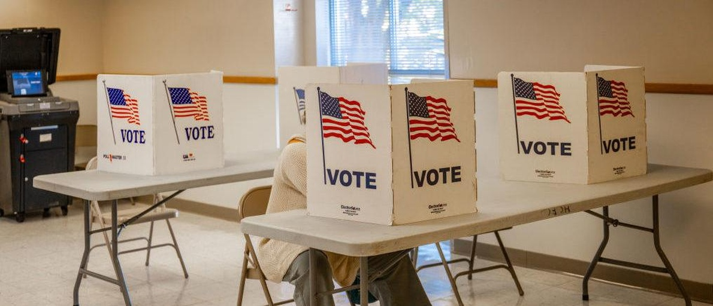

Arizona City Appoints Convicted Democrat Ballot Harvester Gloria Torres As Vice Mayor: REPORTThe city of San Luis in Arizona appointed a Democrat convicted of ballot harvesting to serve as Vice Mayor. The San Luis city council and Mayor Nieves Riedel appointed Gloria Torres as the vice mayor during a December council meeting, the city announced Dec. 14. Her appointment comes just months after she was sentenced to two years of supervised probation after pleading guilty to one count of ballot abuse, according to KYMA. “I am thrilled to be appointed Vice Mayor of the City of San Luis,” Torres said in a statement. Part of Torres’s punishment included a $2,500 fine and the stipulation she may not run or be appointed to public office again but may finish her term as a city councilwoman through 2024, KYMA reported. It is unclear how she was allowed to be appointed vice mayor, and the Daily Caller has reached out to the San Luis City Council for more information. Lawlessness is rewarded in Arizona “Convicted Ballot Harvester Gloria Torres Named San Luis Vice-Mayor.” https://t.co/1sOJjaq8PP— Abe Hamadeh War Room (@AbeWarRoom) January 2, 2024 Torres was indicted alongside Nadia Buchanan by a state grand jury in 2022 for harvesting ballots during the 2020 primary election. Torres was accused of collecting seven ballots from Buchanan, who allegedly collected at least one ballot from a different individual, according to the indictment. Under state law, only a family member, household member or caregiver can collect ballots from another person. (RELATED: JASON SNEAD: This Voting Scandal Should Have Alarm Bells Ringing For Election Integrity Supporters Everywhere) Torres has served on the City Council since 2000 and has reportedly faced other controversies. While serving on the Gadsden Elementary School District #32 Governing Board, the district “paid employees for time not worked, limited public access to some Governing Board meetings and wasted $65,000 on unnecessary travel, and lacked oversight of its transportation program,” according to Arizona Daily Independent. |
 |